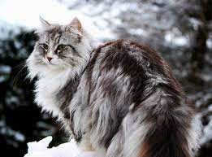

Saúde
A pelagem é uma das marcas registradas do Norueguês da Floresta. Gatos da raça precisam, então, de cuidados com os pelos. A escovação deve ser frequente para evitar formação de nós e embaraçamento dos fios. Vale lembrar que o gato Norueguês da Floresta solta mais pelo na primavera, então a escovação pode ser feita mais vezes. Apesar do Norueguês da Floresta gostar de água, o banho do gato não precisa é recomendado. Quanto à saúde, o Norueguês da Floresta tem tendência a desenvolver displasia coxofemoral, cardiomiopatia e obesidade felina. Portanto, é importante fazer visitas ao veterinário regularmente.
Personalidade
O Norueguês da Floresta possui uma grande inteligência! Ela pode ser percebida principalmente na sua personalidade
curiosa, exploradora e comunicativa. A raça está sempre observando tudo ao seu redor, absorvendo muito conhecimento.
O gato Norueguês da Floresta é esperto e possui enorme facilidade de aprendizado.
A aparência do Norueguês da Floresta pode ser de gato selvagem, mas sua personalidade é totalmente sociável! Essa raça
se dá bem com qualquer um, seja animal ou pessoa. É um gato que se dá bem com crianças, pois possui um lado brincalhão
que ama se divertir com os pequenos e qualquer um. O gato Norueguês da Floresta quer ficar próximo aos tutores, criando
um grande companheirismo. Por isso mesmo, o bichano está sempre a postos para proteger com seu instinto territorialista,
herança de seus antepassados e que se mantém presente até hoje. Mas, apesar do seu jeitinho territorial, o felino está
sempre bem calmo. Dificilmente você verá um Norueguês da Floresta mal-humorado, pois é muito tranquilo e paciente. Além
disso, o gato da raça Norueguês da Floresta tem uma ótima capacidade de adaptação a qualquer ambiente, uma característica
que também vem dos seus ancestrais.
Características Físicas
O Norueguês da Floresta é considerado uma raça de gato gigante, com peso variando entre 4Kg e 9Kg e altura entre 25cm a 35cm.
Ou seja, é maior que a maioria das raças de gato. O gato Norueguês da Floresta possui um desenvolvimento lento, característica
comum em raças de gato gigante - como acontece com o Maine Coon e o Ragdoll. Por conta disso, o Norueguês da Floresta demora mais
para atingir o desenvolvimento adulto, tanto no tamanho quanto no emocional. Geralmente, isso acontece entre os 3 e 5 anos de idade.
Por conta disso, a raça continua com algumas características de filhote, no físico e no comportamento, por mais tempo que outras
raças.
A pelagem do Norueguês da Floresta é exuberante e felpuda, dando o ar selvagem que é sua grande característica. São pelos espessos,
que tornam o animal bem resistente ao frio - uma característica necessária para essa raça originada no clima frio da Noruega. Os pelos
do gato Norueguês da Floresta são lisos, densos e longos. A pelagem é mais curtinha nos ombros e aumenta ao longo do corpo. O Norueguês
da Floresta é um gato peludo, principalmente no rabo e na cabeça (onde os pelos formam uma espécie de juba). Por conta dos pelos
volumosos, o Norueguês da Floresta, muitas vezes, parece até mesmo ser maior do que é.